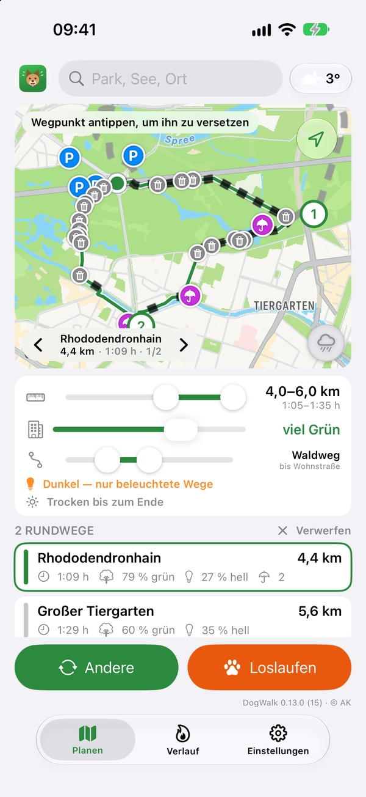
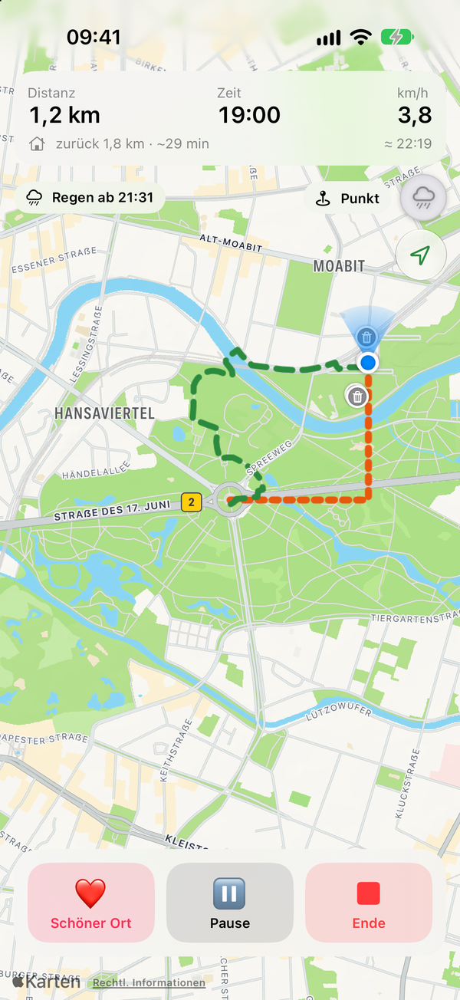
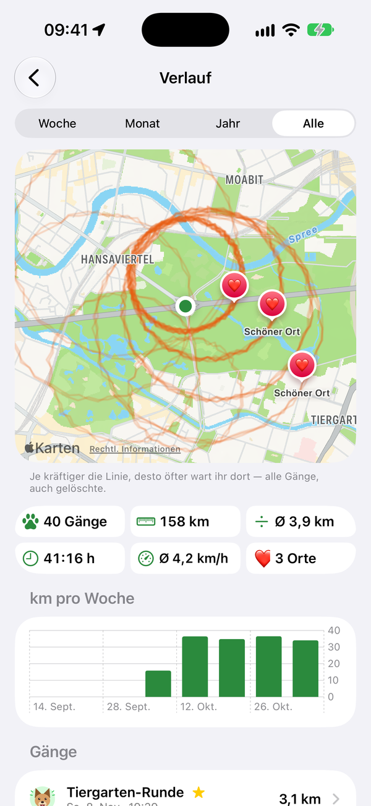

Gassi-Runden im Grünen — für iPhone und Apple Watch.



Fragen, Fehler, Ideen oder eine Runde, die nicht gepasst hat: info@skyvane.app. In der App geht das auch unter Einstellungen → Feedback senden.
Keine Runde gefunden? Die App braucht die Ortung („Beim Verwenden der App“) oder einen Start auf der Karte. Die Wege kommen aus den Kartendaten von OpenStreetMap; wo sie fehlen, fragt die App Apple Karten, das die Zahl der Anfragen je Minute begrenzt — dann kurz warten. Wenig Runden? Den Regler „Wege“ weiter stellen.
Regen: Radar und Vorhersage gelten für Deutschland.
Abbiegen spürst du nicht? Einstellungen → „Vibrieren vor dem Abbiegen“ einschalten; das iPhone muss die Ortung im Hintergrund dürfen.
Kein Konto, keine Werbung, keine Analyse. Deine Gänge liegen auf deinen Geräten und in deiner privaten iCloud. Einzelheiten: Datenschutzerklärung.
DogWalkPlanner plans green loop walks for you and your dog – from your door or around a park or lake – with rain radar, turn alerts and the way back on free walks. The app is in German; rain data covers Germany. Questions: info@skyvane.app · Privacy policy
SkyVane · Apps für Himmel und Unterwegs · info@skyvane.app